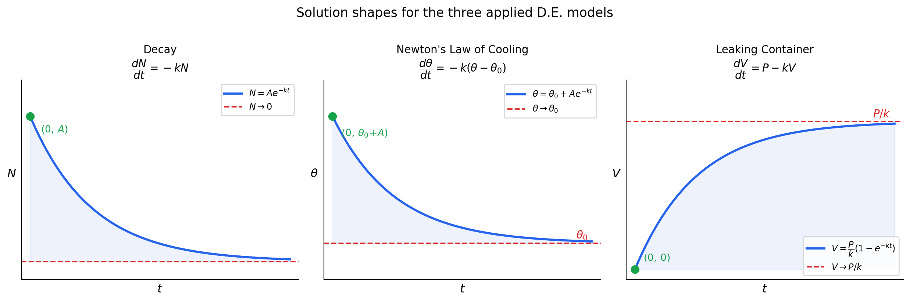
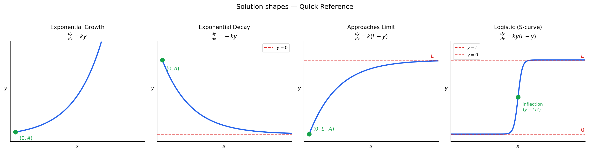

Differential Equations — Core Concepts
Differential Equations — Core Concepts
1. Solving Separable 1st Order Differential Equations
What is a Differential Equation?
A differential equation (D.E.) is any equation that contains a derivative.
- 1st order: involves only \(\dfrac{dy}{dx}\) (no higher derivatives)
- Separable: can be written in the form \(\dfrac{dy}{dx} = f(x)\,g(y)\) — the right-hand side factorises into a function of \(x\) only times a function of \(y\) only
Method: Separation of Variables
\[\frac{dy}{dx} = f(x)\,g(y)\]
| Step | What to do | Result |
|---|---|---|
| 1. Separate | Move all \(y\) terms to the left, all \(x\) terms to the right | \(\dfrac{1}{g(y)}\,dy = f(x)\,dx\) |
| 2. Integrate | Integrate both sides | \(\displaystyle\int \frac{1}{g(y)}\,dy = \int f(x)\,dx\) |
| 3. Solve | Write \(y\) explicitly (if possible); add constant \(C\) | \(F(y) = F(x) + C\) |
TipKEY
- A general solution contains an arbitrary constant \(C\) — it represents a family of curves
- A particular solution is found by substituting given initial conditions to determine \(C\)
- Add only one constant \(C\) at the end (constants from both sides merge into one)
Ex 1 — General solutions (분리변수로 일반해 구하기)
i. \(\displaystyle\frac{dy}{dx} = (1+2y)(1-2x)\)
Separate: \(\dfrac{1}{1+2y}\,dy = (1-2x)\,dx\)
\[\int \frac{1}{1+2y}\,dy = \int (1-2x)\,dx\]
\[\frac{1}{2}\ln|1+2y| = x - x^2 + C\]
\[\boxed{\ln|1+2y| = 2x - 2x^2 + A \quad (A = 2C)}\]
또는 \(y = \dfrac{1}{2}\!\left(e^{2x-2x^2+A}-1\right)\)로 쓸 수도 있다.
ii. \(\displaystyle\cos^2 x\,\frac{dy}{dx} = y^2\sin^2 x\)
Separate: \(\dfrac{1}{y^2}\,dy = \dfrac{\sin^2 x}{\cos^2 x}\,dx = \tan^2 x\,dx\)
\[\int y^{-2}\,dy = \int \tan^2 x\,dx = \int (\sec^2 x - 1)\,dx\]
\[-\frac{1}{y} = \tan x - x + C\]
\[\boxed{y = \frac{-1}{\tan x - x + C}}\]
iii. \(\displaystyle\frac{dy}{dx} = 2e^{x-y}\)
\(e^{x-y} = e^x \cdot e^{-y}\)이므로 분리 가능:
Separate: \(e^y\,dy = 2e^x\,dx\)
\[\int e^y\,dy = \int 2e^x\,dx\]
\[e^y = 2e^x + C\]
\[\boxed{y = \ln(2e^x + C)}\]
Ex 2 — Particular solutions (초기조건으로 특수해 구하기)
i. \(\displaystyle\frac{dy}{dx} = \sin x\cos^2 x;\quad y = 0 \text{ when } x = \frac{\pi}{3}\)
Separate: \(dy = \sin x\cos^2 x\,dx\)
\[\int dy = \int \sin x\cos^2 x\,dx\]
치환: \(u = \cos x,\; du = -\sin x\,dx\)
\[y = -\int u^2\,du = -\frac{u^3}{3} + C = -\frac{\cos^3 x}{3} + C\]
초기조건 대입: \(x = \dfrac{\pi}{3},\; y = 0\):
\[0 = -\frac{(1/2)^3}{3} + C \implies C = \frac{1}{24}\]
\[\boxed{y = -\frac{\cos^3 x}{3} + \frac{1}{24}}\]
ii. \(\displaystyle(1-x^2)\frac{dy}{dx} = xy + y;\quad x = 0.5,\; y = 6\)
우변 인수분해: \(xy + y = y(x+1)\)
\[\frac{dy}{dx} = \frac{y(x+1)}{1-x^2} = \frac{y(x+1)}{(1-x)(1+x)} = \frac{y}{1-x}\]
Separate: \(\dfrac{1}{y}\,dy = \dfrac{1}{1-x}\,dx\)
\[\int \frac{1}{y}\,dy = \int \frac{1}{1-x}\,dx\]
\[\ln|y| = -\ln|1-x| + C\]
초기조건 대입: \(x = 0.5,\; y = 6\):
\[\ln 6 = -\ln(0.5) + C \implies C = \ln 6 - \ln 2 = \ln 3\]
\[\ln|y| = -\ln|1-x| + \ln 3 = \ln\frac{3}{|1-x|}\]
\[\boxed{y = \frac{3}{1-x} \quad (x < 1)}\]
TipIntegration Technique: When to use U-Substitution
U-substitution works when the derivative of the “inner” function is already present in the integrand (up to a constant factor).
Recognition pattern: \(\displaystyle\int f(g(x))\cdot g'(x)\,dx\) → set \(u = g(x)\)
| Integrand pattern | Set \(u =\) | Why it works |
|---|---|---|
| \(\sin x \cos^2 x\) | \(\cos x\) | \(\frac{d}{dx}\cos x = -\sin x\) ✓ |
| \(x^2 \sin(x^3)\) | \(x^3\) | \(\frac{d}{dx}x^3 = 3x^2\) ✓ |
| \(\dfrac{2x}{x^2+1}\) | \(x^2 + 1\) | \(\frac{d}{dx}(x^2+1) = 2x\) ✓ |
| \(2x\,e^{x^2}\) | \(x^2\) | \(\frac{d}{dx}x^2 = 2x\) ✓ |
When u-sub doesn’t fit → consider trig identity, integration by parts, or partial fractions.
Example: \(\displaystyle\int \sin x\cos^2 x\,dx\) can also be done via product-to-sum identity \(\bigl(\sin x\cos^2 x = \tfrac{1}{4}(\sin 3x + \sin x)\bigr)\), giving \(-\dfrac{\cos 3x}{12} - \dfrac{\cos x}{4} + C\) — identical answer, but u-sub is cleaner.
풀이 비교 — \(\displaystyle\int \sin x\cos^2 x\,dx\): u-sub vs product-to-sum
Method 1: U-substitution (권장)
Set \(u = \cos x \implies \dfrac{du}{dx} = -\sin x \implies \sin x\,dx = -du\)
\[\int \sin x \cos^2 x\,dx = \int u^2 \cdot (-du) = -\int u^2\,du\]
\[= -\frac{u^3}{3} + C = \boxed{-\frac{\cos^3 x}{3} + C}\]
Method 2: Product-to-sum identity
Triple angle identity 이용: \(\sin 3x = 3\sin x - 4\sin^3 x\), \(\cos 3x = 4\cos^3 x - 3\cos x\)
여기서는 다음 identity 사용:
\[\sin x \cos^2 x = \frac{1}{4}(\sin 3x + \sin x)\]
유도: \(\sin 3x = \sin(2x+x) = \sin 2x\cos x + \cos 2x\sin x\) \(= 2\sin x\cos^2 x + (1-2\sin^2 x)\sin x = 3\sin x - 4\sin^3 x\) 한편 \(\sin x\cos^2 x = \sin x(1-\sin^2 x)\)이므로 \(\sin 3x + \sin x = 4\sin x - 4\sin^3 x = 4\sin x\cos^2 x\) \(\implies \sin x\cos^2 x = \tfrac{1}{4}(\sin 3x + \sin x)\)
따라서:
\[\int \sin x\cos^2 x\,dx = \frac{1}{4}\int(\sin 3x + \sin x)\,dx\]
\[= \frac{1}{4}\left(-\frac{\cos 3x}{3} - \cos x\right) + C = \boxed{-\frac{\cos 3x}{12} - \frac{\cos x}{4} + C}\]
두 답이 같은 이유
\(-\dfrac{\cos^3 x}{3}\)과 \(-\dfrac{\cos 3x}{12} - \dfrac{\cos x}{4}\)는 상수 차이만 있는 동일한 함수야.
\(\cos 3x = 4\cos^3 x - 3\cos x\)를 대입하면:
\[-\frac{4\cos^3 x - 3\cos x}{12} - \frac{\cos x}{4} = -\frac{\cos^3 x}{3} + \frac{\cos x}{4} - \frac{\cos x}{4} = -\frac{\cos^3 x}{3}\]
2. Important Applied D.E.s (in relation to C3/C4)
C3/C4: old UK A-Level module names. C3 = differentiation, integration, exponentials/logs, trig. C4 = partial fractions, binomial expansion, differential equations, vectors. Now merged into A-Level Pure Mathematics.
These three models appear frequently in exam questions. Understand the physical meaning of each equation, not just the formula.
| Decay | Newton’s Law of Cooling | Leaking Container | |
|---|---|---|---|
| Scenario | Radioactivity \(N\) decreasing over time | Body temperature \(\theta\) cooling toward surroundings \(\theta_0\) | Liquid poured in at constant rate \(P\), leaks out proportionally |
| Assumption | Rate of decay proportional to amount remaining | Rate of cooling proportional to temperature difference from surroundings | Rate in \(= P\); rate out \(= kV\) |
| D.E. | \(\dfrac{dN}{dt} = -kN \quad (k>0)\) | \(\dfrac{d\theta}{dt} = -k(\theta-\theta_0) \quad (k>0)\) | \(\dfrac{dV}{dt} = P - kV \quad (k>0)\) |
| General solution | \(N = Ae^{-kt}\) | \(\theta = \theta_0 + Ae^{-kt}\) | \(V = \dfrac{P}{k} - Ae^{-kt}\) |
| Graph starts at | \((0,\, A)\) — initial amount | \((0,\, \theta_0 + A)\) — initial temp | depends on \(V_0\): see note ↓ |
Note (Leaking Container): The graph shows the special case \(V_0 = 0\) (tank starts empty), which gives \(A = \dfrac{P}{k}\) and simplifies to \(V = \dfrac{P}{k}(1-e^{-kt})\), starting at \((0,0)\). In general, if the tank starts with volume \(V_0\), then \(A = \dfrac{P}{k} - V_0\), so the curve starts at \((0,\, V_0)\) instead.
TipKEY
- All three are separable — solve each by separating variables
- The \(-k\) in the exponent means all three approach a limit as \(t \to \infty\): \(N \to 0\), \(\theta \to \theta_0\), \(V \to P/k\)
- In exam questions, the constant \(A\) is always determined by the initial condition (값을 알고 있는 시점 = \(t = 0\))
Deriving the solutions (풀이과정 — 시험에 나오면 반드시 쓸 것)
Decay: \(\dfrac{dN}{dt} = -kN\)
\[\int \frac{1}{N}\,dN = \int -k\,dt\]
\[\ln|N| = -kt + C\]
\[N = e^{-kt+C} = e^C \cdot e^{-kt} = Ae^{-kt} \quad (A = e^C > 0)\]
Cooling: \(\dfrac{d\theta}{dt} = -k(\theta - \theta_0)\)
Let \(u = \theta - \theta_0\), then \(\dfrac{du}{dt} = \dfrac{d\theta}{dt}\):
\[\int \frac{1}{u}\,du = \int -k\,dt\]
\[\ln|u| = -kt + C \implies u = Ae^{-kt}\]
\[\boxed{\theta - \theta_0 = Ae^{-kt} \implies \theta = \theta_0 + Ae^{-kt}}\]
Leaking: \(\dfrac{dV}{dt} = P - kV\)
\[\int \frac{1}{P-kV}\,dV = \int dt\]
\[-\frac{1}{k}\ln|P-kV| = t + C\]
\[P - kV = e^{-k(t+C)} = Be^{-kt}\]
\[V = \frac{P}{k} - \frac{B}{k}e^{-kt} = \frac{P}{k} - Ae^{-kt} \quad \left(A = \frac{B}{k}\right)\]
Ex 3 — Applied example: Newton’s Law of Cooling
A cup of coffee cools from \(90°C\) to \(70°C\) in 5 minutes. The room temperature is \(20°C\).
(a) Show that \(\theta = 20 + 70e^{-kt}\), where \(t\) is in minutes.
(b) Find the value of \(k\).
(c) Find the temperature after 20 minutes.
(a) By Newton’s Law of Cooling:
\[\frac{d\theta}{dt} = -k(\theta - 20)\]
General solution: \(\theta = 20 + Ae^{-kt}\)
At \(t=0\): \(\theta = 90 \implies 90 = 20 + A \implies A = 70\)
\[\boxed{\theta = 20 + 70e^{-kt}}\]
(b) At \(t=5\): \(\theta = 70\)
\[70 = 20 + 70e^{-5k} \implies 50 = 70e^{-5k} \implies e^{-5k} = \frac{5}{7}\]
\[-5k = \ln\frac{5}{7} \implies \boxed{k = \frac{1}{5}\ln\frac{7}{5} \approx 0.0673}\]
(c) At \(t=20\):
\[\theta = 20 + 70e^{-20k} = 20 + 70\left(\frac{5}{7}\right)^4 = 20 + 70\cdot\frac{625}{2401}\]
\[\boxed{\theta \approx 38.2°C}\]
Ex 4 — Applied example: Leaking container
Water flows into a tank at \(5\ \text{litres/min}\). It also leaks out at a rate proportional to the volume \(V\) of water, with constant \(k = 0.1\). Initially the tank is empty.
(a) Write down and solve the D.E.
(b) Find the long-term volume of water in the tank.
(a)
\[\frac{dV}{dt} = 5 - 0.1V\]
\[\int \frac{1}{5-0.1V}\,dV = \int dt \implies -10\ln|5-0.1V| = t + C\]
\[5 - 0.1V = Ae^{-0.1t}\]
At \(t=0\): \(V=0 \implies 5 = A\)
\[V = \frac{5 - 5e^{-0.1t}}{0.1} = 50(1 - e^{-0.1t})\]
\[\boxed{V = 50(1 - e^{-0.1t})}\]
(b) As \(t \to \infty\): \(e^{-0.1t} \to 0\)
\[\boxed{V \to 50\ \text{litres}}\]
이것이 평형 부피: 유입 속도 = 유출 속도인 상태.
3. Quick Reference — Solution Shapes
| D.E. form | Solution type | Shape |
|---|---|---|
| \(\dfrac{dy}{dx} = ky\) | Exponential growth | \(y = Ae^{kx}\) |
| \(\dfrac{dy}{dx} = -ky\) | Exponential decay | \(y = Ae^{-kx}\) |
| \(\dfrac{dy}{dx} = k(L - y)\) | Approaches limit \(L\) | \(y = L - Ae^{-kx}\) |
| \(\dfrac{dy}{dx} = ky(L-y)\) | Logistic (S-curve) | \(y = \dfrac{L}{1+Ae^{-kLx}}\) |
Logistic equation — 풀이 증명
Step 1 — 변수분리
\[\frac{dy}{y(L-y)} = k\,dx\]
Step 2 — 좌변 부분분수
\[\frac{1}{y(L-y)} = \frac{A}{y} + \frac{B}{L-y}\]
\(1 = A(L-y) + By\)에서:
- \(y = 0\): \(\quad A = \dfrac{1}{L}\)
- \(y = L\): \(\quad B = \dfrac{1}{L}\)
\[\frac{1}{L}\left(\frac{1}{y} + \frac{1}{L-y}\right)dy = k\,dx\]
Step 3 — 적분
\[\frac{1}{L}\int\left(\frac{1}{y} + \frac{1}{L-y}\right)dy = \int k\,dx\]
\[\frac{1}{L}\left(\ln|y| - \ln|L-y|\right) = kx + C\]
\[\ln\left|\frac{y}{L-y}\right| = kLx + C'\]
\[\frac{y}{L-y} = Ae^{kLx}\]
Step 4 — \(y\)에 대해 풀기
\[y = Ae^{kLx}(L-y) \implies y\left(1 + Ae^{kLx}\right) = ALe^{kLx}\]
분자분모를 \(Ae^{kLx}\)로 나누면:
\[\boxed{y = \frac{L}{1 + Be^{-kLx}}} \quad \left(B = \frac{1}{A}\right)\]
왜 S자 곡선인가 — 변곡점 증명
| 값 | |
|---|---|
| \(x \to -\infty\) | \(y \to 0\) |
| \(x \to +\infty\) | \(y \to L\) |
| 변곡점 | \(y = \dfrac{L}{2}\) |
\(\dfrac{dy}{dx} = ky(L-y)\)를 \(x\)로 한 번 더 미분:
\[\frac{d^2y}{dx^2} = k\frac{dy}{dx}(L-2y) = k^2y(L-y)(L-2y)\]
\(0 < y < L\) 구간에서 \(\dfrac{d^2y}{dx^2} = 0\)이 되는 조건은 \(y = \dfrac{L}{2}\) → 이 점에서 증가 속도 최대, S자 곡선의 변곡점.

TipExam Strategy
- Identify the type: is it separable? What form does the right-hand side take?
- Separate carefully — don’t forget to move \(g(y)\) to the left before integrating
- Integrate both sides — check which side needs a substitution
- Apply initial conditions — substitute and solve for \(C\) (or \(A\)) immediately
- Answer the question — general solution vs particular solution vs numerical value
4. Connected Rate of Change
For three variables \(x,\, y;\; t\)
if the geometric relationship between \(x\) and \(y\) can be given as
\[x = f(y)\]
and also if the rate of change of \(x\) is known implicitly as
\[\frac{dx}{dt} = g(x)\]
the rate of change of \(y\) can be also known through the chain rule
\[\frac{dy}{dt} = \frac{dy}{dx}\cdot\frac{dx}{dt} = \frac{1}{f'(y)}\,g(x) = \frac{g(f(y))}{f'(y)}\]
NoteWhat is a geometric relationship?
A geometric relationship is a formula connecting two variables purely from the shape or geometry of the object — independent of time \(t\).
| Situation | Geometric relationship |
|---|---|
| Cube (side \(s\)) | \(A = 6s^2\), \(V = s^3\) \(\;\Rightarrow\;\) \(A = 6V^{2/3}\) |
| Sphere (radius \(r\)) | \(A = 4\pi r^2\), \(V = \tfrac{4}{3}\pi r^3\) \(\;\Rightarrow\;\) \(r = \!\left(\tfrac{3V}{4\pi}\right)^{1/3}\) |
| Conical tank | \(r \propto h\) \(\;\Rightarrow\;\) \(V = kh^3\) |
Why it matters: the problem gives \(\dfrac{dA}{dt}\) but asks for \(\dfrac{dV}{dt}\). The geometric relationship bridges the two via the chain rule:
\[\frac{dV}{dt} = \underbrace{\frac{dV}{dA}}_{\text{differentiate geometric formula}} \cdot \underbrace{\frac{dA}{dt}}_{\text{given rate}}\]
TipKEY
- You may have to find for yourself a geometric relationship between \(x\) and \(y\)
- You may have to find for yourself extra information for a particular solution (when \(t = 0\), usually)
Ex 5 — Connected rate of change: expanding cube
At time \(t\) seconds the surface area of a cube is \(A\,\text{cm}^2\) and the volume is \(V\,\text{cm}^3\). The surface area of the cube is expanding at a constant rate of \(2\,\text{cm}^2\text{s}^{-1}\). Show that \(\dfrac{dV}{dt} = \dfrac{1}{2}\,V^{1/3}\).
Geometric relationship — let the side length be \(s\):
\[A = 6s^2 \implies s = \sqrt{\frac{A}{6}}, \qquad V = s^3 = \left(\frac{A}{6}\right)^{3/2}\]
So \(A = 6V^{2/3}\), i.e. \(A = f(V) = 6V^{2/3}\).
Given: \(\dfrac{dA}{dt} = 2\)
Chain rule:
\[\frac{dV}{dt} = \frac{dV}{dA}\cdot\frac{dA}{dt}\]
Differentiate \(A = 6V^{2/3}\) with respect to \(V\):
\[\frac{dA}{dV} = 6\cdot\frac{2}{3}V^{-1/3} = 4V^{-1/3} \implies \frac{dV}{dA} = \frac{1}{4}V^{1/3}\]
Therefore:
\[\boxed{\frac{dV}{dt} = \frac{1}{4}V^{1/3}\cdot 2 = \frac{1}{2}\,V^{1/3}}\]